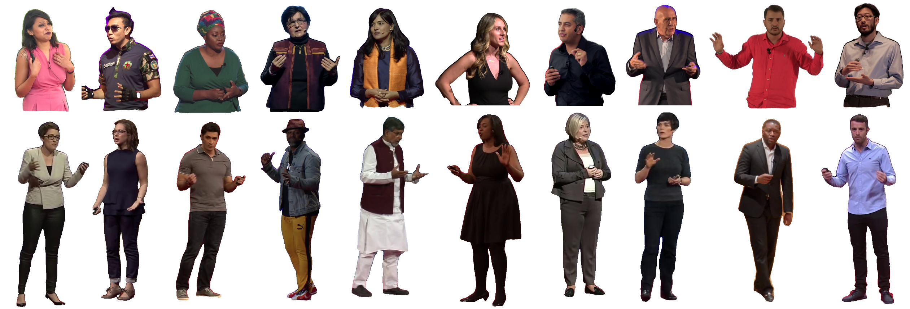
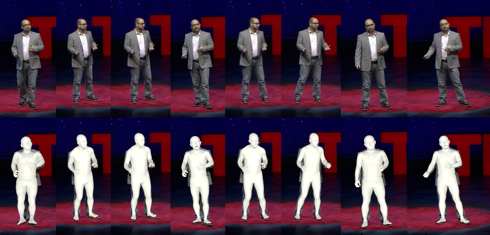

About dataset
TEDXPeople dataset contains 48,188 videos of TED and TED-X talks. We have extracted and processed from 8 to 16 frames from each video, in which a person is visible in either full-body or close-up upper-body view. This dataset is very diverse in terms of demographics andclothing styles, though the resolution is limited and there are certain biases associated with peculiar lighting and camera viewpoints specific to TED(-X) talks. We open-source a list of links to YouTube videos and specific frames that we used. For each frame we also provide an SMPL-X fit of a speaker.

Downloads
Due to legal reasons we can not publish raw images from the dataset. However, we provide list of youtube videos we used along with frame indexes used for training and testing. We also publish parameters for SMPLx body model fitted using smplify-x mathod.
You may download a .zip file with the data splits and SMPLx parameters using the following links:
.json files scheme